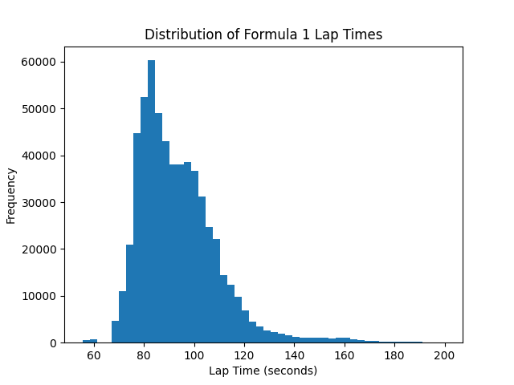
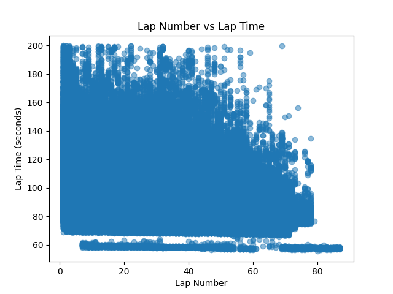
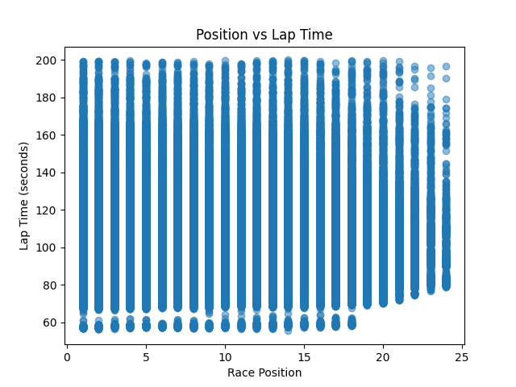
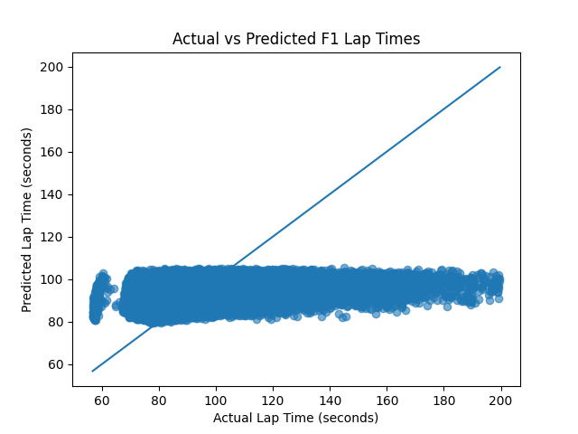

Results & Visualizations

Figure 1: Actual vs Predicted Lap Times

Figure 2: Distribution of Lap Times

Figure 3: Lap Number vs Lap Time

Figure 4: Position vs Lap Time

Figure 5: Model Prediction Trend